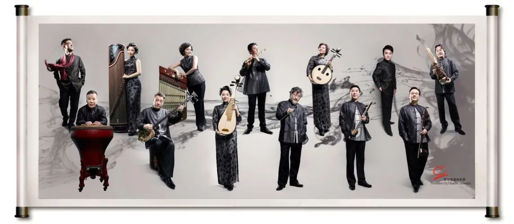
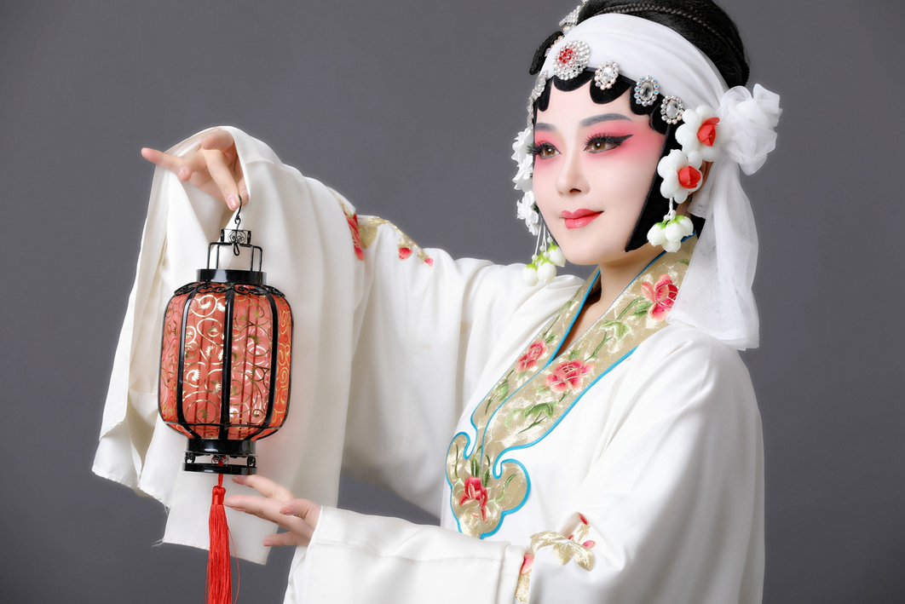

music and drama
Current Location:Home page>>Chinese music and drama
Folk music
Duet Duet: From the northern region, the performance form for male and female duo singing, the lyrics are mostly humorous, is a popular form of comedy folk music.
Erquan Yingyue of Sichuan Opera: Sichuan Opera from Sichuan region, famous for its unique singing and performance forms, Erquan Yingyue is a famous pipeggio in Sichuan opera.
Northern Shaanxi Folk songs: Folk songs originating in northern Shaanxi are famous for their simple and pleasant tunes and simple and sincere emotions.
Traditional music
Classical Chinese music: This includes ancient court music and traditional compositions, such as the elegant music dating back to the Zhou Dynasty. Classical Chinese music often uses instruments such as guqin (a kind of seven-stringed guqin) and Xiao (clarinet).
Ethnic minority music: China has many diverse ethnic groups, each with their own unique musical traditions. For example, the music of the Yi, Zhuang, Uyghur and other ethnic minorities forms a colorful musical style with unique cultural expression.
Traditional opera
Beijing Opera: Beijing Opera is one of the most representative forms of Chinese opera, with highly standardized performance skills and unique singing. The performance of Beijing Opera includes singing, reading, doing and playing, and the performers are divided into Sheng, Dan, Jing and mu professions.
Cantonese Opera: Cantonese opera, also known as Cantonese opera, is sung in the Cantonese dialect and performed to music. It is known for its versatile actors and fast-paced performances.
Sichuan Opera: Originating from Sichuan region, Sichuan Opera is famous for its beautiful singing, exaggerated and vivid performance, and has unique local characteristics.